투혼 MTS 도움말
주식 자동주문
시세를 계속
지켜보지 않아도 OK!
조건만 세워두면
자동으로 매매 실행
🤖 원하는 조건만 설정해두면,
시세를 계속 보지 않아도 자동으로
매수·매도 주문이 실행돼요!
📈 시장 상황에 맞춰 타이밍 놓치지 않는
스마트한 거래를 경험해보세요.
주식 자동주문
🤖 주식 자동주문은 미리 설정한 조건에 따라 📈
매수·매도 주문이 자동으로 실행되는 기능이에요.
거래 기회를 더 쉽게 포착하고,
효율적으로 익절과 손절 매매를 할 수 있어요.
- 트레이딩
- 기타주문
- 주식 자동주문
이용방법 - 매수
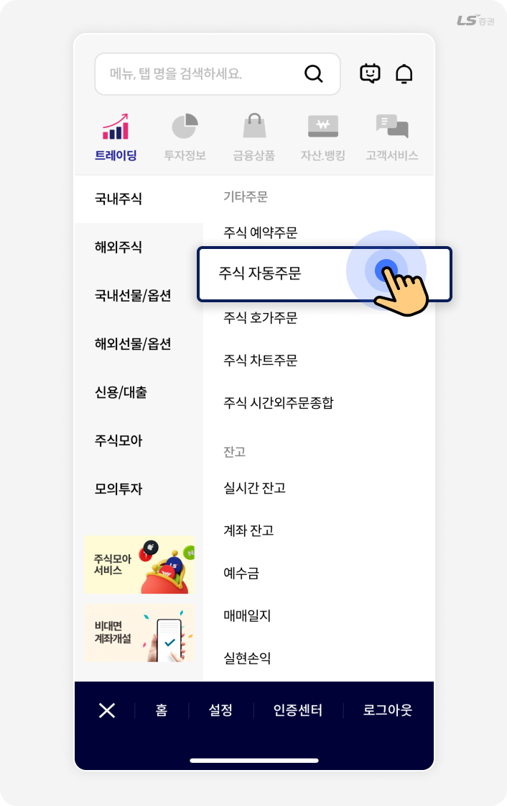
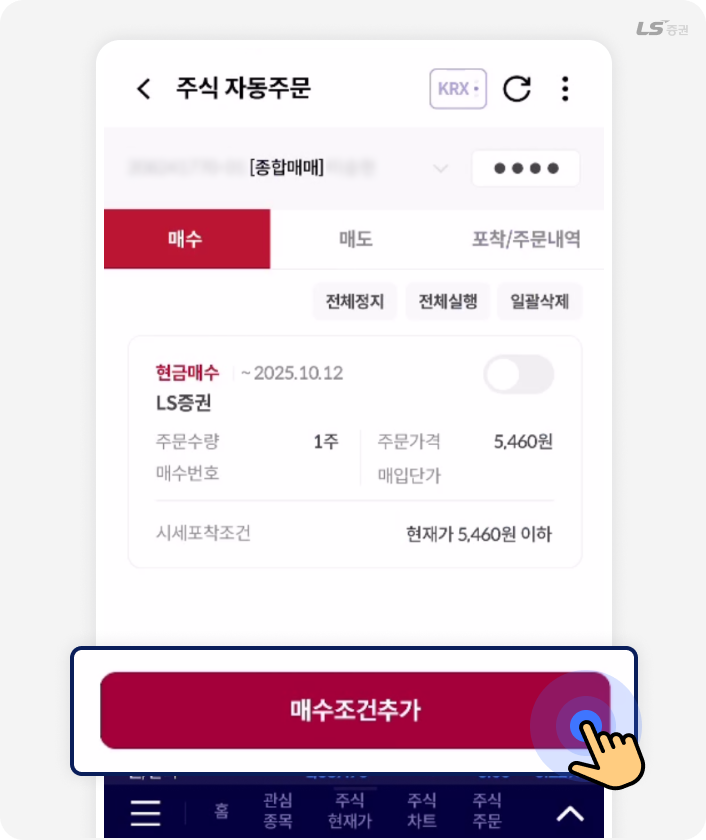
주식 자동주문에서 ‘매수조건추가’를 선택해주세요.
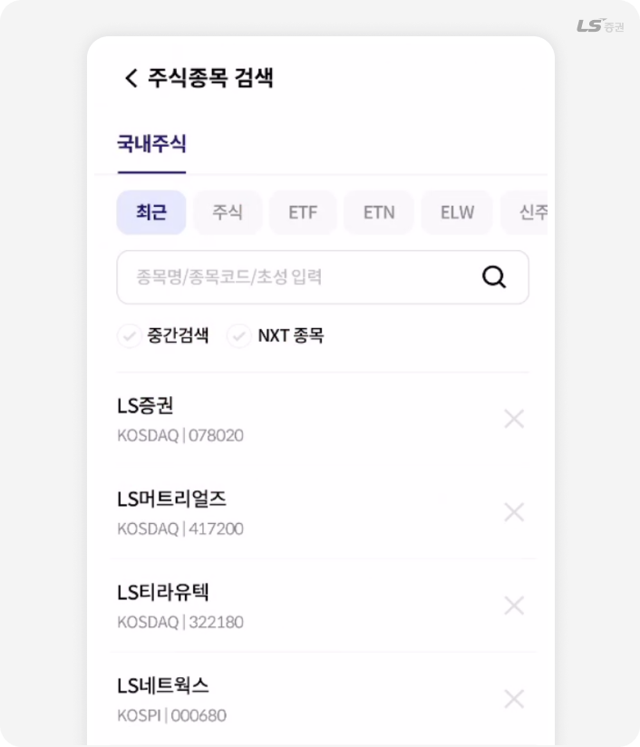
자동주문을 설정하려는 종목을 검색하여 선택해 주세요.
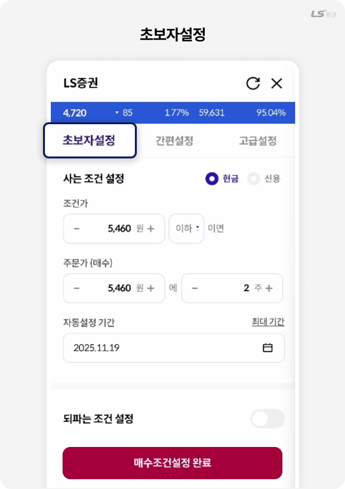
‘초보자 설정’은 주가가 특정 가격 이상 또는 이하로 움직일때 미리 정한 가격과 수량으로 자동 매수가 실행되도록 조건을 입력하는 방식이에요.
예를 들어 현재가가 5,200원 이하가 되면 5,200원에 10주를 자동으로 매수하도록 설정하는 식으로 간단하게 사용할 수 있어요.
TIP!
되파는 조건 설정을 ON으로 활성화하면, 자동 매수주문이 체결된 후 매도주문까지 자동으로 실행되는 조건을 추가로 설정할 수 있어요. 종목 현재가가 설정한 조건가 이상 또는 이하가 되면, 설정한 주문가와 수량으로 매도주문이 실행돼요.
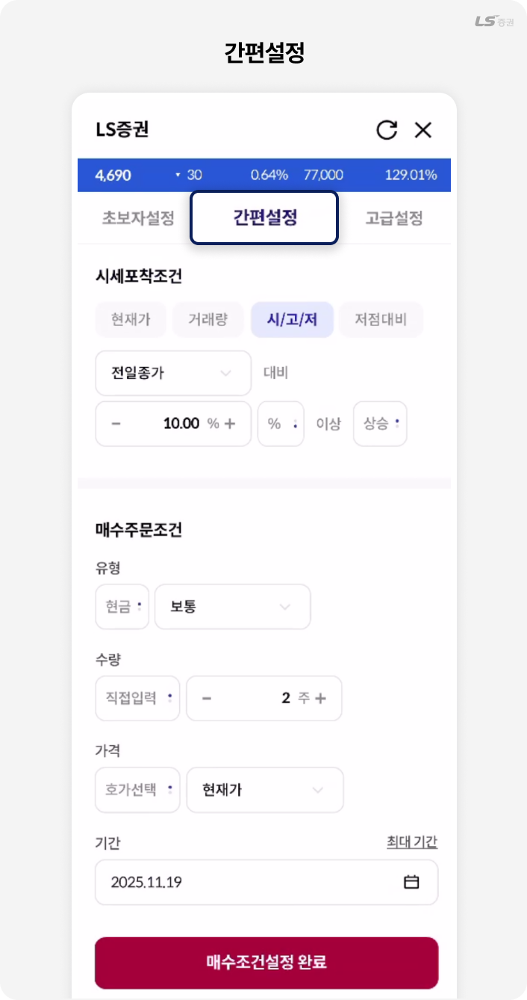
‘간편 설정’은 현재가 외에도 거래량, 시/고/저, 저점대비 등 다양한 시세 조건을 기준으로 매수주문을 실행할 수 있는 기능이에요.
예를 들어 매수하려는 종목이 전일종가 대비 10% 이상이 되면 설정한 주문유형,수량, 가격에 매수주문이 실행되도록 쉽게 활용할 수 있어요.
TIP!
· 현재가 : 지정한 가격에 도달하면 자동으로 매매할 때 사용해요.
· 거래량 : 거래가 활발해지는 시점을 잡고 싶을 때 유용해요.
· 시/고/저 : 전일종가, 전일시가, 전일저가, 당일시가 중 기준이 되는 가격 조건을 선택할 수 있어요.
· 저점대비 : 당일 최저가 대비 얼마나 상승했는지를 기준으로, 되돌림 구간에서 진입 시점을 정할 때 유용해요.
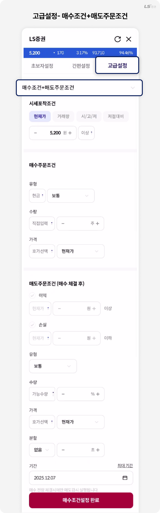
‘고급설정- 매수조건+매도주문조건’은 원하는 시세포착조건을 충족하면 매수주문이 실행되는 것은 기본이고, 매수주문이 체결된 뒤에 세밀하게 설정된 이익·손실 기준에 따라 매도주문까지 실행되도록 매매의 전 과정을 한 번에 자동으로 관리할 수 있는 편리한 기능이에요.
예를 들어 현재가가 5,200원 이상이면 매수주문을 내고, 주문이 체결된 종목이 5,400원 이상이 되면 매도로 이익 실현, 5,100원 이하로 내려가면 매도로 손절하여 손실을 줄이는 등 효율적인 투자 전략을 실현할 수 있어요.
TIP!
매수조건은 설정한 가격이나 거래 조건이 충족될 때 비로소 주문이 접수되는 방식이에요.
즉, 매수조건이 충족되기 전에는 매수주문 및 매도주문이 실행되지 않으며, 매수조건이 충족되어 매수 체결이 이루어지는 경우, 매도조건이 실행돼요.
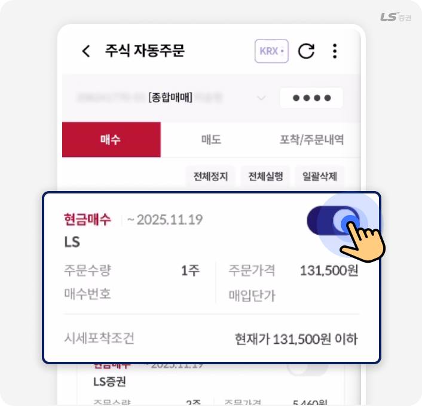
매수조건설정이 완료되면, 원하는 매수조건에 토글 버튼을 눌러 활성화 시켜주세요.
TIP!
활성화된 매수조건으로 거래가 완료될경우, 해당조건은 비활성화 돼요.
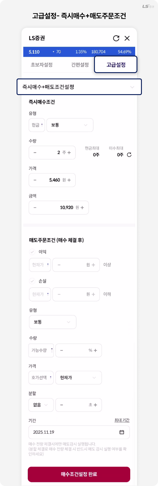
‘고급설정 – 즉시매수 + 매도주문조건’은 시세포착조건 없이 일반 매수주문과 동일하게 매수주문을 접수한 뒤, 매수주문 전량 체결 시 매도조건 감시가 실행되는 기능이에요.
예를 들어, 지금 바로 2주 매수주문을 접수하고 2주 주문이 체결된 뒤 목표가에 도달하면 자동 이익 실현, 정해둔 가격 아래로 떨어지면 자동 손절까지 한 번에 관리할 수 있어요. 즉, 진입부터 청산까지 전 과정을 자동화해 매매 타이밍을 놓치지 않도록 도와줘요.
이용방법 - 매도
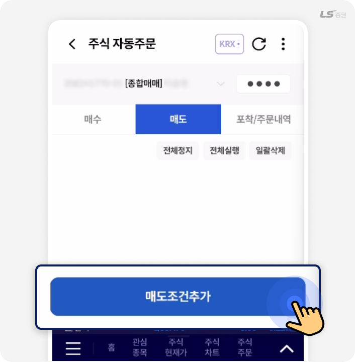
주식 자동주문에서 ‘매도조건추가’를 선택해 주세요.
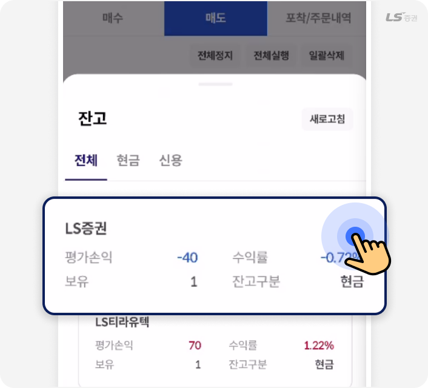
잔고에 보유하고 있는 종목 중 하나를 선택해 주세요.
TIP!
매도조건설정은 자신이 보유한 종목으로만 가능해요.
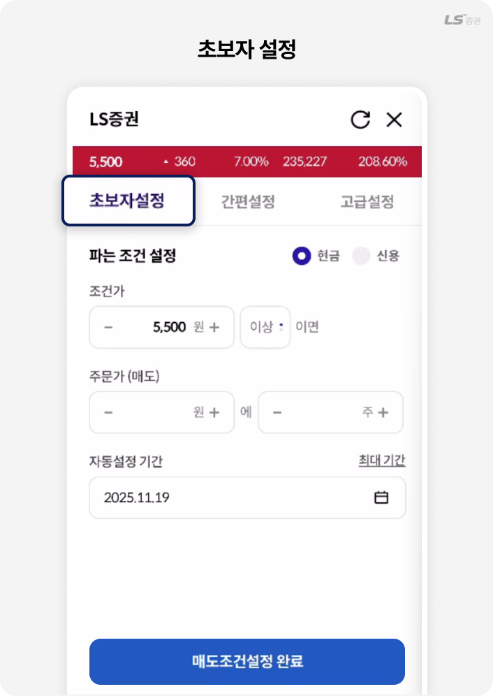
‘초보자설정’은 현재가가 특정 가격 이상 또는 이하가 되면 미리 정한 가격과 수량으로 자동으로 매도가 실행되도록 간단히 조건을 입력하는 기능이에요.
예를 들어 현재가가 5,500원 이상이 되면 설정해 둔 가격과 수량에 매도해 잔고를 손쉽게 정리할 수 있어요.
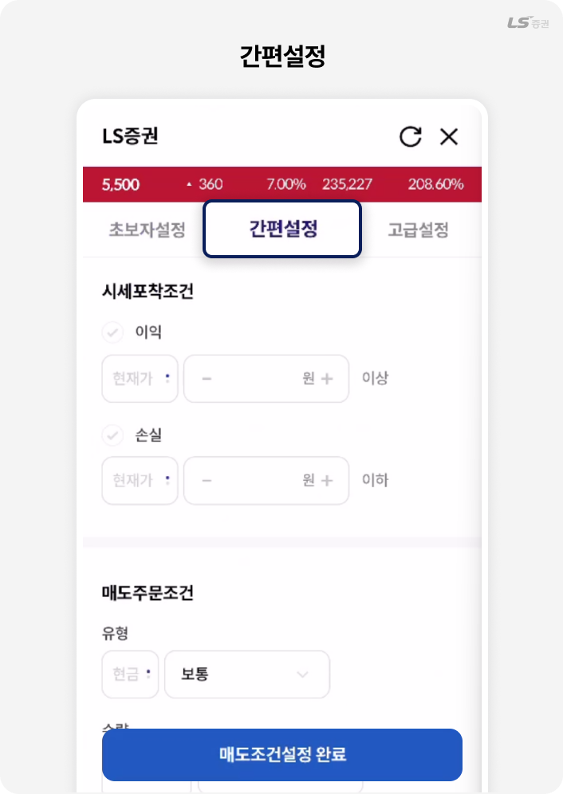
‘간편설정’ 매도는 보유한 종목의 현재가가 일정 가격에 도달하거나 일정 비율의 수익 또는 손실이 났을 때 자동으로 매도되도록 설정하는 방식으로, 고객은 이익과 손실 중 원하는 기준을 정하고 가격과 수량 등 매도 내용을 입력해요.
예를 들어 현재가가 5,500원 이상이 되면 수익을 실현하기 위해 자동 매도하거나, 반대로 5,300원 이하로 떨어져서 추가 손실을 막기 위해 자동 매도하는 등 여러 조건을 간단하게 설정할 수 있어요.
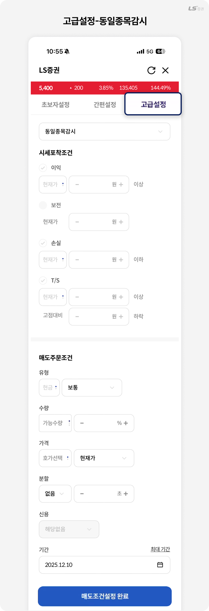
‘고급설정-동일종목감시’ 매도 화면은 여러 조건을 조합해 원하는 상황이 오면 자동으로 매도가 이뤄지도록 세밀하게 설정하는 기능이에요.
주요 조건 1) 이익/보전: ‘이익’ 선택 시 ‘보전’ 조건을 추가로 선택할 수 있어요. 목표 가격 또는 이익 조건 도달 시 매도 주문이 실행되는데, 목표 가격에 도달하지 못하고 보전 가격까지 하락하는 경우에도 이익을 보전하기 위한 매도주문이 실행돼요.
주요 조건 2) T/S: T/S(Trailing Stop, 트레일링 스탑) 주문은 목표 가격이나 이익을 돌파한 이후, 최고점에서 일정 비율의 가격 하락 시 매도주문으로 익절을 할 수 있게 도와줘요.
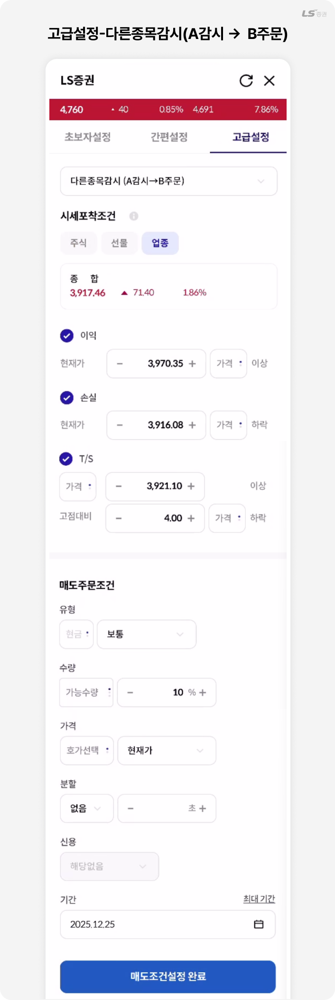
고급설정의 ‘다른종목감시(A감시→B주문)’ 기능은 특정 업종 지수나 다른 종목의 시세 조건을 감시해 기준에 도달하면 내가 매매하려는 종목(B종목)으로 자동 주문을 전환해주는 설정으로, 예를 들어 ‘업종’ 탭에서 IT업종 지수가 급등하면 해당 업종에 속한 A회사 주가에도 영향을 줄 수 있다는 점을 활용해 IT업종 지수(감시 A)가 일정 수준 이상 오를 때 A회사 주식을 자동 매도·매수(B주문)하도록 설정하는 방식이에요.
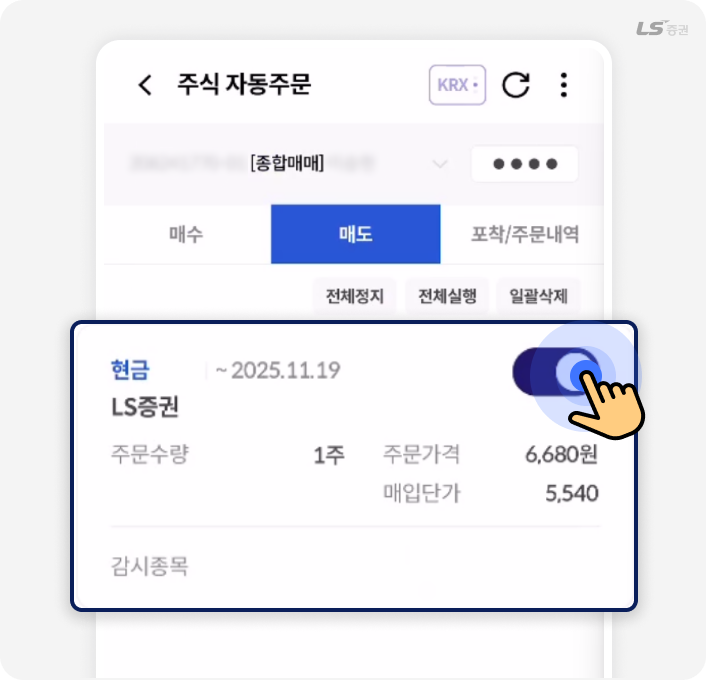
매도조건설정이 완료되면, 원하는 매수조건에 토글 버튼을 눌러 활성화 시켜주세요.
TIP!
- · 활성화된 매도조건으로 거래가 완료될 경우, 해당조건은 비활성화돼요.
- · MTS 내 모든 유형의 자동주문은 주문확인 방식을 ‘자동’으로만 설정할 수 있어요.
HTS에서 수동으로 설정하더라도 MTS에서 확인 요청 팝업이 표시되지 않아요.
화면소개
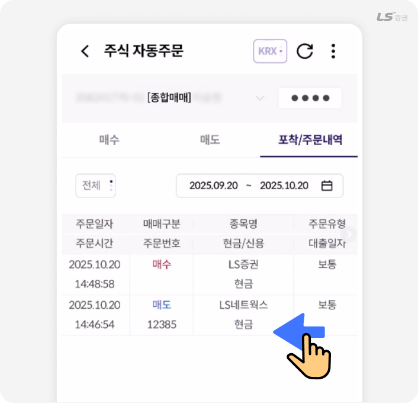
‘포착/주문내역’ 화면은 자동주문이 실행된 내역을 조회하는 공간이에요.
매수·매도 종목, 주문유형, 주문가격 등 거래 세부 정보를 한눈에 확인할 수 있어요.
기간을 설정해 원하는 시점의 자동주문 이력을 빠르게 조회할 수 있어요.
TIP!
포착/주문내역에서는 주문을 정정/취소할 수 없어요.
실제로 접수된 주문은 ‘주식 주문 - 정정/취소’ 등에서 정정하거나 취소해 주세요.